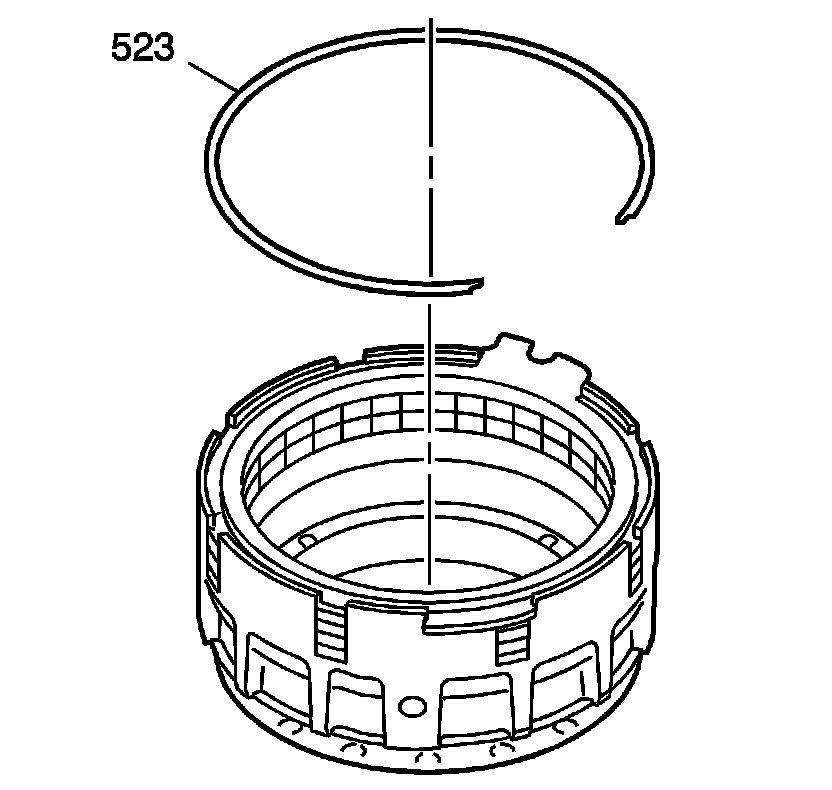
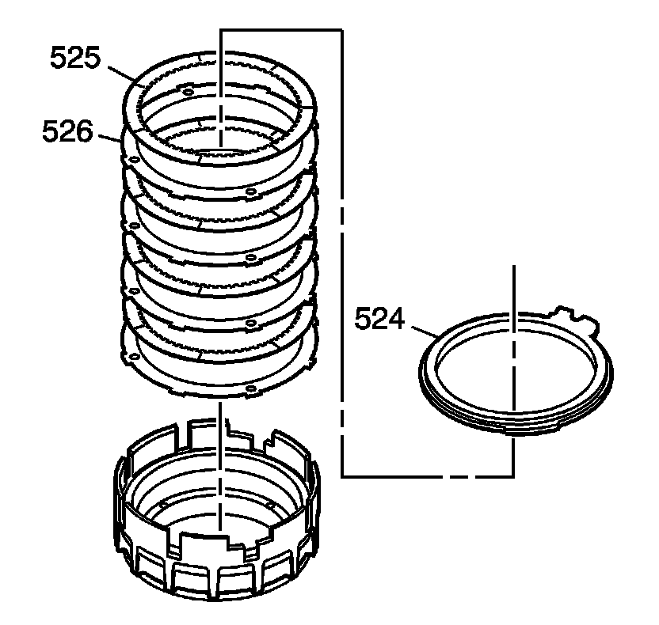
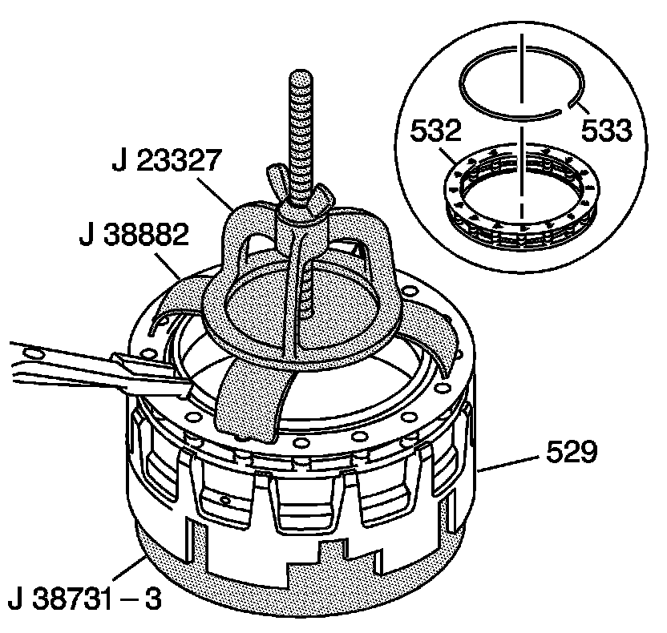
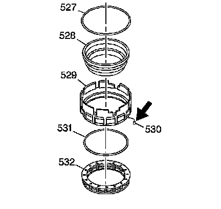

Fourth Clutch Assembly Disassemble
Fourth Clutch Assembly Disassemble
Tools Required
^ J 23327 Clutch Spring Compressor
^ J 38731-3 Fourth Clutch Piston and Housing Seal Spacer
^ J 38882 Fourth Clutch Spring and Retainer Assembly Adapter

1. Remove the fourth clutch backing plate retainer ring (523).

2. Remove the fourth clutch backing plate (524).
3. Remove the fourth clutch plates (525, 526).

4. Place the fourth clutch housing (529) onto the J 38731-3.
5. Using the J 38882 and the J 23327, compress the fourth clutch spring assembly (532).
6. Remove the fourth clutch spring retainer ring (533).
7. Remove the J 38882 and the J 23327.
8. Remove the fourth clutch spring assembly (532).

9. Remove the fourth clutch piston (528).
10. Remove the fourth clutch piston inner seal (527).
11. Remove the fourth clutch piston outer seal (531) from the fourth clutch housing (529).
12. Inspect the fourth clutch orifice (530).
The small hole in the orifice should be open approximately 0.51 mm (0.020 in).